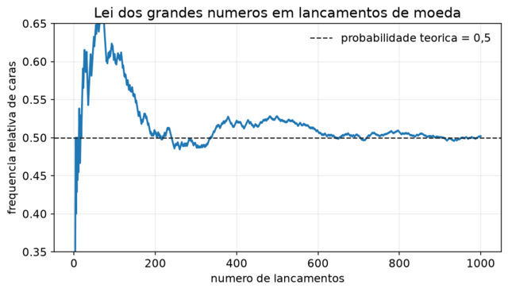
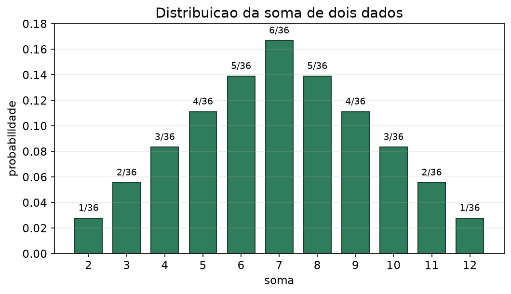
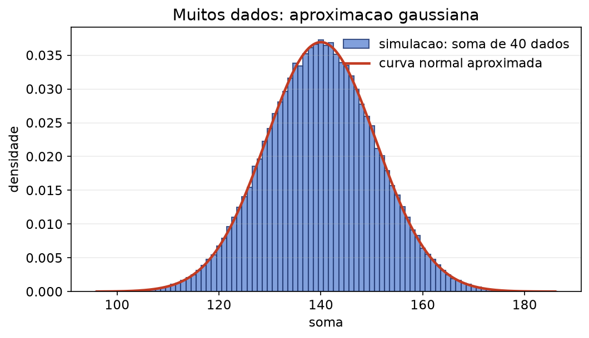
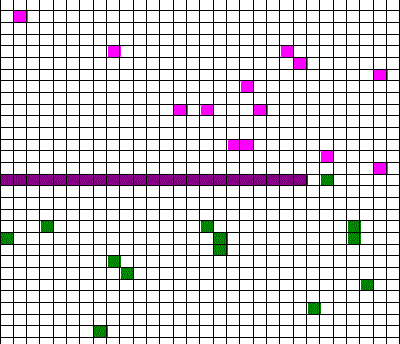
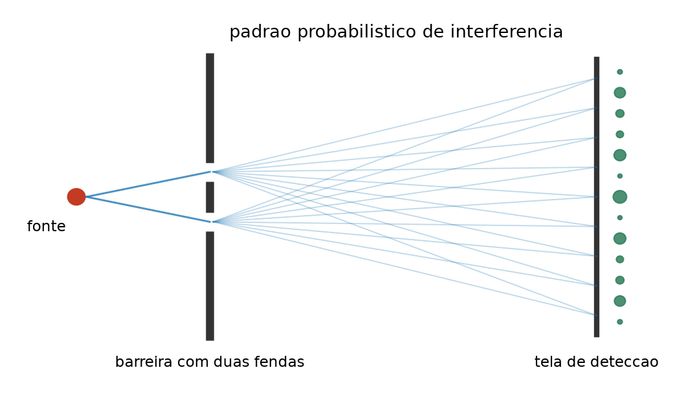
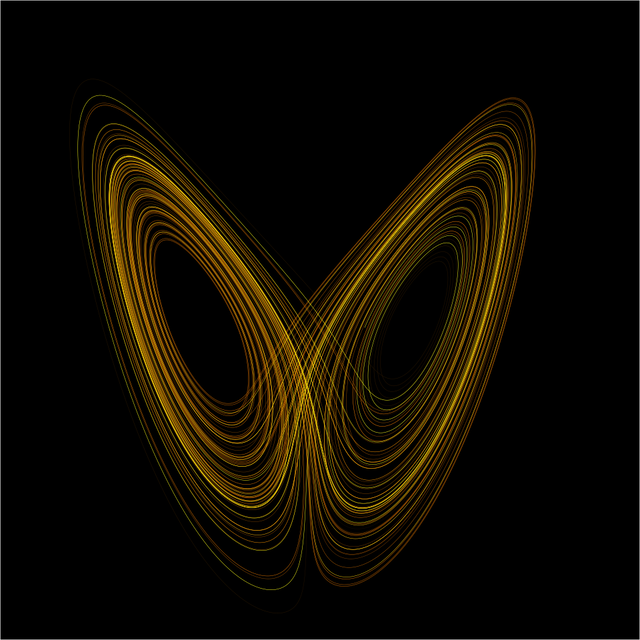
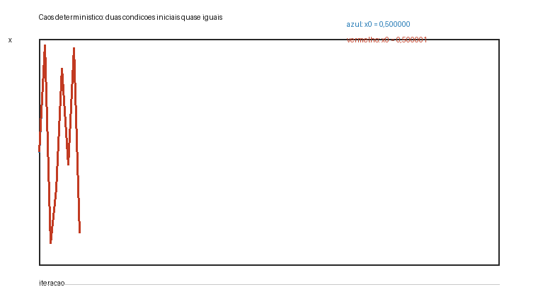
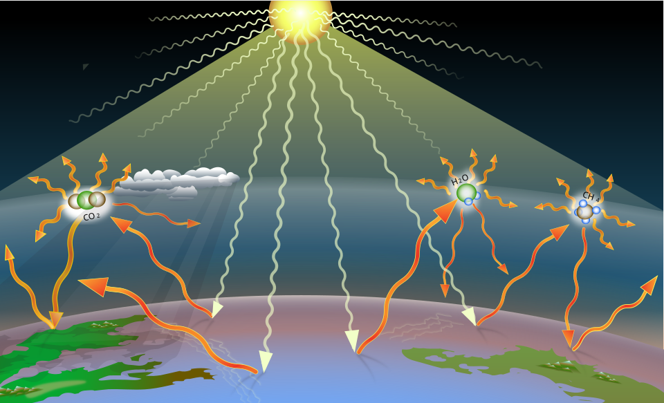
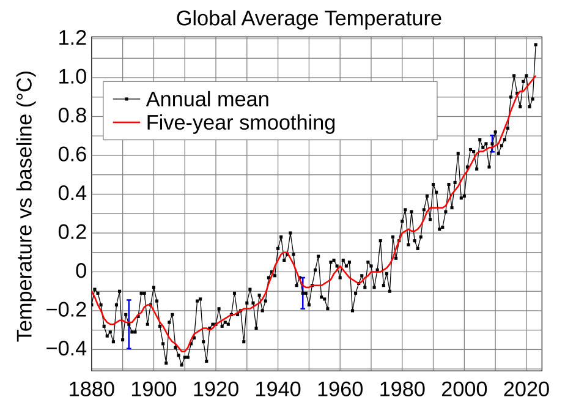

Determinismo x Probabilismo: probabilidade, caos, mundo quântico, inteligência artificial e mudanças climáticas
Seminários Integrados
Objetivos
Ao final deste seminário, você deverá ser capaz de:
- Distinguir eventos determinísticos e eventos probabilísticos.
- Explicar por que previsões exatas podem deixar de ser possíveis.
- Interpretar frequências relativas, lei dos grandes números e regularidades estatísticas.
- Relacionar moedas, dados e somas de variáveis aleatórias ao pensamento probabilístico.
- Descrever o papel da probabilidade na Mecânica Quântica e na Inteligência Artificial.
- Diferenciar caos determinístico e aleatoriedade.
- Aplicar esses conceitos à discussão sobre mudanças climáticas.
Problema de Pesquisa
Se o clima obedece a leis físicas, por que a previsão do tempo pode falhar, por que eventos extremos parecem aleatórios e como a ciência ainda consegue afirmar que há mudanças climáticas?
Considere três afirmações:
- A atmosfera é governada por leis físicas.
- A previsão detalhada do tempo para uma cidade daqui a muitos dias pode falhar.
- A temperatura média global pode apresentar uma tendência de aquecimento ao longo de décadas.
À primeira vista, essas afirmações parecem entrar em conflito. Se há leis físicas, por que não conseguimos prever tudo exatamente? Se um evento extremo específico é incerto, como falar em tendência climática?
Esse problema conduz à ideia central da aula:
um sistema pode ser determinístico nas leis e, mesmo assim, exigir descrições probabilísticas na prática.
Eventos
Evento Determinístico
Um evento determinístico é aquele em que, dadas as mesmas condições iniciais e as mesmas leis de evolução, o resultado é definido.
Em uma situação ideal, se conhecemos todos os dados relevantes, podemos prever o resultado.
Exemplos:
- queda livre sem resistência do ar;
- movimento de um projétil em um modelo ideal;
- órbita planetária aproximada;
- circuito elétrico ideal;
- propagação de calor em uma barra com condições bem definidas.
Na Mecânica de Newton, a segunda lei expressa essa ideia (NEWTON, 1999):
\[ \vec{F}=m\vec{a}. \]
Se conhecemos as forças e as condições iniciais, calculamos a aceleração e prevemos o movimento. Essa é uma leitura indireta da tradição newtoniana: o movimento passa a ser tratado como problema matemático a partir de leis e condições iniciais (NEWTON, 1999).
Exemplo: queda livre
Em um modelo idealizado derivado das equações de movimento de Newton, a posição vertical de um objeto pode ser descrita por (NEWTON, 1999):
\[ y(t)=y_0+v_0t-\frac{gt^2}{2}. \]
Esse tipo de modelo mostra o poder do determinismo clássico. Ele também mostra uma limitação: o modelo é exato apenas dentro das hipóteses assumidas. Se houver vento, turbulência, formato irregular do objeto ou resistência do ar relevante, o problema real fica mais complexo do que o modelo inicial.
O sonho determinista de Laplace
Pierre-Simon de Laplace imaginou uma inteligência capaz de conhecer, em um instante, todas as posições, velocidades e forças da natureza. Se essa inteligência também pudesse realizar todos os cálculos necessários, ela conheceria o passado e o futuro.
Essa ideia ficou conhecida como demônio de Laplace.
No sonho determinista:
- o universo é governado por leis;
- o presente contém toda a informação sobre o futuro;
- a incerteza existe apenas porque não sabemos tudo;
- prever seria uma questão de medir melhor e calcular melhor.
Laplace formulou esse ideal ao defender que uma inteligência suficientemente ampla poderia abranger, numa mesma fórmula, os movimentos dos maiores corpos e dos menores átomos (LAPLACE, 1951). Trata-se de uma citação indireta porque a formulação acima resume a tese, sem reproduzir literalmente o texto original.
Esse ideal funcionou muito bem em vários problemas da Física Clássica, mas não resolve todos os casos. Há pelo menos três limites importantes:
- sistemas com muitas partículas, como gases;
- sistemas caóticos, como a atmosfera;
- fenômenos quânticos, nos quais a probabilidade tem papel estrutural.
Evento Probabilístico
Um evento probabilístico é aquele em que não descrevemos o resultado por uma única possibilidade garantida, mas por um conjunto de resultados possíveis com probabilidades associadas.
Exemplos:
- resultado de uma moeda;
- face obtida em um dado;
- soma de dois dados;
- decaimento de um átomo radioativo;
- posição de detecção de uma partícula em um experimento quântico;
- próxima palavra escolhida por um modelo generativo de IA;
- ocorrência de chuva em uma previsão meteorológica.
Probabilidade não significa “chute”. Probabilidade é uma forma matemática de lidar com incerteza, regularidade coletiva e grau de confiança.
Moedas: probabilidade, frequência e lei dos grandes números
Em uma moeda equilibrada, há dois resultados possíveis:
- cara;
- coroa.
O modelo probabilístico ideal da moeda equilibrada atribui probabilidades iguais aos dois resultados possíveis (JAMES, 2017):
\[ P(\text{cara})=\frac{1}{2}=0{,}5 \qquad P(\text{coroa})=\frac{1}{2}=0{,}5. \]
Isso não significa que, em 10 lançamentos, teremos exatamente 5 caras e 5 coroas.
Pode ocorrer:
- 6 caras e 4 coroas;
- 3 caras e 7 coroas;
- uma sequência de várias caras seguidas;
- uma alternância aparentemente regular.
O resultado individual é incerto, mas a frequência relativa tende a se estabilizar quando repetimos o experimento muitas vezes.
Se \(n_{\text{cara}}\) é o número de caras em \(n\) lançamentos, a frequência relativa é definida por (JAMES, 2017):
\[ f_{\text{cara}}=\frac{n_{\text{cara}}}{n}. \]
Pela lei dos grandes números, para muitos lançamentos esperamos a aproximação estatística (JAMES, 2017):
\[ f_{\text{cara}}\rightarrow 0{,}5. \]
A lei dos grandes números afirma, de forma intuitiva, que a frequência relativa de um evento tende a se aproximar de sua probabilidade teórica quando o número de repetições cresce (JAMES, 2017).
No caso da moeda:
- em 10 lançamentos, a frequência de caras pode ficar longe de 0,5;
- em 100 lançamentos, tende a ficar mais próxima;
- em 1000 lançamentos, tende a se estabilizar ainda mais.
Isso não elimina flutuações. A lei dos grandes números não diz que toda sequência curta será equilibrada. Ela diz que, no longo prazo, aparece uma regularidade estatística.

No começo, a frequência de caras oscila bastante, porque há poucos lançamentos. À medida que o número de lançamentos cresce, a curva tende a se aproximar de 0,5. O gráfico não diz que a sequência fica perfeitamente equilibrada; ele mostra a estabilização estatística prevista pela lei dos grandes números.
Soma de dois dados
Em um dado equilibrado, cada face é modelada com a mesma probabilidade (JAMES, 2017):
\[ P(1)=P(2)=P(3)=P(4)=P(5)=P(6)=\frac{1}{6}. \]
Se lançamos dois dados e observamos a soma, os resultados possíveis vão de 2 até 12.
Mas essas somas não têm a mesma probabilidade.
Número de formas para cada soma:
- soma 2: 1 forma;
- soma 3: 2 formas;
- soma 4: 3 formas;
- soma 5: 4 formas;
- soma 6: 5 formas;
- soma 7: 6 formas;
- soma 8: 5 formas;
- soma 9: 4 formas;
- soma 10: 3 formas;
- soma 11: 2 formas;
- soma 12: 1 forma.
Como há 36 resultados possíveis ao lançar dois dados, a probabilidade de cada soma é obtida pela razão entre casos favoráveis e casos possíveis (JAMES, 2017):
\[ P(\text{soma }7)=\frac{6}{36} \]
e
\[ P(\text{soma }2)=\frac{1}{36}. \]
Por isso, em muitos lançamentos, a soma 7 aparece mais do que a soma 2 ou a soma 12.

Cada barra representa a probabilidade de uma soma possível. A soma 7 tem a barra mais alta porque pode ser formada de seis maneiras diferentes. As somas 2 e 12 têm barras menores porque cada uma só pode ocorrer de uma maneira.
Muitas somas e aproximação gaussiana
O gráfico da soma de dois dados tem formato triangular, com pico na soma 7. Ele ainda não é uma curva normal.
Quando aumentamos a quantidade de dados e observamos a soma, a distribuição começa a se aproximar de uma forma de sino. Essa regularidade está ligada ao teorema limite central (JAMES, 2017).
De modo intuitivo:
a soma de muitas variáveis aleatórias independentes tende a formar uma distribuição próxima da normal, mesmo quando cada variável original não é normal.

As barras mostram as somas obtidas em muitas simulações com 40 dados. A curva vermelha mostra uma distribuição normal aproximada. O ponto importante é que a soma de muitas variáveis aleatórias independentes produz uma forma cada vez mais parecida com uma curva de sino.
Essa ideia ajuda a entender por que curvas aproximadamente normais aparecem em tantos fenômenos:
- erros de medida;
- alturas de pessoas em uma população;
- médias de amostras;
- ruídos acumulados;
- flutuações resultantes de muitos pequenos fatores.
Movimento browniano e difusão
Outro exemplo importante de descrição probabilística aparece no movimento browniano e na difusão, cuja interpretação física foi decisiva para relacionar flutuações microscópicas e comportamento estatístico macroscópico (EINSTEIN, 1905).
Em escala microscópica, moléculas se movem e colidem continuamente. Não acompanhamos cada colisão individual em detalhe; descrevemos o comportamento coletivo por regularidades estatísticas.

As partículas começam concentradas e, com o tempo, se espalham pelo espaço disponível. O movimento individual é irregular, mas o comportamento coletivo apresenta uma tendência estatística: a mistura.
No PDF, a animação aparece como imagem estática; no HTML, ela permanece animada.
Aplicações de Eventos Probabilísticos
Eventos probabilísticos aparecem quando o resultado individual não pode ser descrito por uma previsão única segura, mas há regularidades, distribuições ou probabilidades que permitem análise científica.
Isso ocorre em sistemas simples, como moedas e dados, mas também em áreas centrais da ciência contemporânea, como Mecânica Quântica e Inteligência Artificial.
Mecânica Quântica
Na Mecânica Quântica, a probabilidade tem papel fundamental.
Ela não aparece apenas porque o sistema é complicado demais ou porque não temos instrumentos suficientemente bons. Na teoria quântica, muitos resultados de medição são descritos por probabilidades.
Born propôs interpretar a função de onda em termos probabilísticos: o quadrado de sua amplitude está associado à probabilidade de encontrar a partícula em certa região (BORN, 1926). Essa é uma citação indireta, pois resume a interpretação sem reproduzir o texto original.
Einstein e Bohr
A interpretação probabilística da Mecânica Quântica gerou um debate famoso entre Albert Einstein e Niels Bohr. Einstein aceitava muitos resultados da teoria quântica, mas resistia à ideia de que a natureza fosse fundamentalmente probabilística. Em carta a Max Born, de 4 de dezembro de 1926, ele expressou essa objeção com a frase que ficou conhecida como “Deus não joga dados” (EINSTEIN; BORN, 1971).
Bohr defendia uma posição diferente: para ele, a teoria quântica não deveria ser julgada pela expectativa clássica de trajetórias e valores definidos antes da medição. A resposta atribuída a Bohr, “Einstein, pare de dizer a Deus o que fazer”, resume bem essa tensão: Einstein buscava uma descrição mais determinística da realidade, enquanto Bohr aceitava que a física quântica descreve probabilidades de resultados observáveis.
Função de onda
O estado quântico de uma partícula pode ser representado por uma função de onda (BORN, 1926; FEYNMAN; LEIGHTON; SANDS, 2011):
\[ \psi(x,t). \]
A função de onda não fornece uma trajetória clássica da partícula.
A quantidade abaixo é interpretada, na formulação probabilística de Born, como densidade de probabilidade associada à posição (BORN, 1926):
\[ |\psi(x,t)|^2 \]
Isso significa que a teoria prevê a distribuição dos resultados possíveis, não necessariamente o resultado individual exato.
Princípio da incerteza
O princípio da incerteza de Heisenberg estabelece um limite fundamental para a precisão simultânea de certas grandezas.
Para posição e momento, a relação de incerteza é expressa por (HEISENBERG, 1927):
\[ \Delta x\,\Delta p\geq \frac{\hbar}{2}. \]
Isso significa que não podemos atribuir, ao mesmo tempo, valores arbitrariamente precisos para posição e momento. Essa incerteza não é apenas defeito experimental. Ela faz parte da estrutura da teoria (HEISENBERG, 1927).
Dupla fenda
O experimento da dupla fenda é uma das demonstrações mais importantes da diferença entre intuição clássica e comportamento quântico.
No experimento:
- elétrons, fótons ou outras partículas quânticas são enviados contra uma barreira com duas fendas;
- depois atingem uma tela de detecção;
- quando não se mede por qual fenda a partícula foi detectada, aparece um padrão de interferência;
- quando se mede o caminho, o padrão muda.
A ideia central é que o resultado individual de cada detecção não é previsto como uma trajetória clássica. A teoria prevê probabilidades para os pontos de detecção na tela.
Por isso, é melhor evitar a frase “o elétron passa pelas duas fendas ao mesmo tempo” como se fosse uma trajetória clássica. Uma formulação mais precisa é: sem medida de caminho, a descrição quântica envolve uma superposição de amplitudes associadas às duas fendas; quando se mede o caminho, a interferência desaparece ou se reduz.

A fonte envia partículas para uma barreira com duas fendas, e a tela registra os pontos de detecção. O esquema não deve ser lido como uma trajetória clássica obrigatória. Ele serve para visualizar que a teoria calcula uma distribuição de probabilidades na tela.
Feynman, Leighton e Sands (2011) tratam a dupla fenda como um exemplo central do comportamento quântico, porque ela mostra interferência mesmo quando a detecção ocorre partícula por partícula.
Inteligência Artificial
Muitos sistemas de IA trabalham com probabilidades.
Um classificador pode estimar, por exemplo:
- 92% de probabilidade de uma imagem ser “gato”;
- 7% de probabilidade de ser “cachorro”;
- 1% de probabilidade de ser “outro”.
Isso não é certeza absoluta. É uma estimativa estatística.
Modelos generativos
Modelos generativos, como modelos de linguagem, produzem texto calculando continuações prováveis.
De forma simplificada:
- O modelo recebe uma sequência de tokens.
- Calcula probabilidades para os próximos tokens.
- Seleciona ou amostra uma continuação.
- Repete o processo até formar uma resposta.
Exemplo:
“As mudanças climáticas são…”
Possíveis continuações:
- “um problema físico”;
- “um fenômeno complexo”;
- “um tema científico”;
- “uma questão geopolítica”.
O modelo pode gerar uma frase plausível, mas plausibilidade estatística não é o mesmo que verdade.
Por isso, respostas de IA precisam ser verificadas com dados, fontes e raciocínio crítico.
Transformers
Transformers são uma arquitetura central em modelos de linguagem contemporâneos.
O artigo de Vaswani et al. (2017) introduziu uma arquitetura baseada em mecanismos de atenção. Em citação direta curta, os autores resumem a proposta no próprio título: “Attention is all you need” (VASWANI et al., 2017, p. 1).
Em termos didáticos:
- o texto é dividido em tokens;
- cada token é representado por vetores numéricos;
- o mecanismo de atenção calcula relações entre tokens;
- a saída final é transformada em probabilidades para os próximos tokens.
Uma etapa comum é aplicar a função softmax, que transforma pontuações numéricas em uma distribuição de probabilidades; essa operação é usada em arquiteturas neurais, incluindo transformers, para normalizar escores de saída ou atenção (VASWANI et al., 2017):
\[ P(t_i)=\frac{e^{z_i}}{\sum_j e^{z_j}}. \]
Assim, quando um modelo escolhe a próxima palavra, ele não consulta uma certeza pronta. Ele trabalha com uma distribuição de probabilidades condicionada ao contexto.
Teoria do Caos
Caos determinístico ocorre quando um sistema obedece a leis determinísticas, mas é extremamente sensível às condições iniciais.
Pequenas diferenças no início podem crescer muito com o tempo.
Essa ideia ficou conhecida popularmente como efeito borboleta. A formulação clássica vem de uma palestra de Edward Lorenz, em 1972, cujo título perguntava: “Does the flap of a butterfly’s wings in Brazil set off a tornado in Texas?” (LORENZ, 1972). A frase não deve ser entendida como uma causalidade simples e direta; ela resume a sensibilidade de sistemas caóticos a perturbações muito pequenas.
Uma forma qualitativa de representar essa sensibilidade às condições iniciais, discutida a partir dos sistemas determinísticos não periódicos de Lorenz, é (LORENZ, 1963):
\[ |x_0-y_0|\ \text{pequeno} \quad\Rightarrow\quad |x(t)-y(t)|\ \text{grande depois de certo tempo}. \]
Também podemos representar o crescimento aproximado do erro por uma relação exponencial, quando o sistema apresenta expoente de Lyapunov positivo (LORENZ, 1963):
\[ \delta(t)\approx \delta_0e^{\lambda t}. \]
Se \(\lambda>0\), o erro inicial cresce rapidamente.
Lorenz mostrou esse comportamento ao estudar modelos simplificados da convecção atmosférica. Em citação indireta, seu trabalho indica que sistemas determinísticos não lineares podem apresentar evolução imprevisível na prática, por causa da sensibilidade às condições iniciais (LORENZ, 1963).

O atrator mostra que a trajetória fica confinada a uma região do espaço de estados, mas não se repete de modo simples. A forma sugere ordem global e imprevisibilidade local: o sistema segue leis, mas pequenas diferenças iniciais levam a percursos diferentes.

Duas condições iniciais quase iguais no mapa logístico seguem trajetórias próximas no começo, mas depois se separam rapidamente. Esse é o ponto central do caos determinístico: a divergência não vem da ausência de leis, mas da sensibilidade extrema às condições iniciais.

Os pêndulos duplos começam quase alinhados, mas pequenas diferenças iniciais se amplificam ao longo do movimento. A animação ilustra por que sistemas determinísticos podem ser praticamente imprevisíveis depois de certo intervalo de tempo.
Caos não é aleatoriedade pura
Um sistema caótico pode ser determinístico.
Isso significa:
- há leis de evolução;
- o sistema não está “sem regra”;
- a dificuldade está na previsão detalhada de longo prazo;
- pequenas incertezas iniciais podem dominar o resultado final.
Portanto, caos determinístico não é o mesmo que evento aleatório puro.
Exemplos aplicados
Exemplos de sistemas em que o caos pode aparecer:
- previsão do tempo: pequenas diferenças na medição inicial da atmosfera podem alterar a previsão depois de alguns dias;
- turbulência: fluidos em movimento podem formar padrões instáveis e difíceis de prever ponto a ponto;
- pêndulo duplo: um sistema mecânico simples pode gerar trajetórias extremamente sensíveis ao ponto inicial;
- trânsito urbano: pequenas perturbações, como uma freada, podem crescer e formar congestionamentos;
- mercados financeiros: decisões individuais, expectativas e retroalimentações podem amplificar pequenas variações;
- ecologia: populações de predadores e presas podem oscilar de modo não linear;
- epidemias: pequenas diferenças em contato social, mobilidade e transmissão inicial podem mudar curvas locais.
Nesses casos, a existência de leis ou mecanismos não garante previsão detalhada ilimitada.
Explicação do Problema de Pesquisa
Agora podemos retornar ao problema inicial:
Se o clima obedece a leis físicas, por que a previsão do tempo pode falhar, por que eventos extremos parecem aleatórios e como a ciência ainda consegue afirmar que há mudanças climáticas?
A resposta exige combinar determinismo, probabilidade, estatística e caos.
Tempo e clima
Tempo meteorológico é o estado da atmosfera em um lugar e momento específico.
Exemplos:
- vai chover amanhã?
- qual será a temperatura máxima hoje?
- haverá tempestade nesta cidade?
Clima é o comportamento estatístico do tempo em períodos longos.
Exemplos:
- média de temperatura;
- distribuição de chuvas;
- frequência de ondas de calor;
- ocorrência de secas e enchentes;
- tendência de aquecimento ou resfriamento.
A NOAA sintetiza a diferença em citação direta curta: “Climate is what you expect. Weather is what actually happens” (NOAA, 2017). Em outra formulação, também direta, a NOAA afirma: “Weather reflects short-term conditions” (NOAA, 2024).
Assim, uma previsão de tempo para daqui a muitos dias pode falhar, mas uma tendência climática de décadas pode ser estudada estatisticamente.
Base física das mudanças climáticas
A Terra recebe energia solar e emite radiação infravermelha para o espaço.
Um modelo físico simplificado do equilíbrio radiativo, baseado no balanço entre radiação solar absorvida e emissão térmica pela lei de Stefan-Boltzmann, é (IPCC, 2021):
\[ \frac{(1-\alpha)S}{4}=\sigma T^4. \]
Nessa expressão:
- \(S\) é a constante solar;
- \(\alpha\) é o albedo planetário;
- \(\sigma\) é a constante de Stefan-Boltzmann;
- \(T\) é a temperatura efetiva.
Gases de efeito estufa alteram esse balanço porque absorvem e reemitem radiação infravermelha.

A radiação solar entra no sistema Terra-atmosfera; parte é refletida e parte é absorvida. A superfície aquecida emite radiação infravermelha. Gases de efeito estufa absorvem e reemitem parte dessa radiação, alterando o balanço de energia.
Uma aproximação amplamente usada para o forçamento radiativo do CO\(_2\) é (MYHRE et al., 1998):
\[ \Delta F\approx 5{,}35\ln\left(\frac{C}{C_0}\right). \]
Esse ponto é importante: mudanças climáticas não são apenas um gráfico estatístico; elas têm base física.
Em citação direta curta, a NASA afirma: “Scientific evidence for warming of the climate system is unequivocal” (NASA, 2026). Em termos indiretos, o IPCC (2021) conclui que a influência humana aqueceu atmosfera, oceanos e continentes, alterando o sistema climático.

A anomalia compara a temperatura observada com uma referência histórica. Valores acima de zero indicam anos mais quentes que a referência; valores abaixo indicam anos mais frios. O que importa para o clima não é um ponto isolado, mas a tendência persistente ao longo de décadas.
O que é caótico no clima?
A atmosfera é um sistema caótico porque pequenas diferenças nas condições iniciais podem alterar a evolução detalhada do tempo meteorológico.
Por exemplo:
- pequena diferença na umidade inicial;
- pequena diferença na temperatura local;
- pequena diferença na velocidade do vento;
- pequena diferença na pressão atmosférica;
- pequena diferença na formação de nuvens;
- pequena diferença no aquecimento de uma superfície urbana.
Essas diferenças podem crescer e mudar a previsão de chuva em uma cidade específica.
Isso explica por que a previsão do tempo tem horizonte limitado.
O que é aleatório no clima?
Chamamos de aleatório aquilo que, em certo modelo, não conseguimos prever individualmente com certeza e tratamos por probabilidades.
Em meteorologia e clima, isso aparece em:
- chance de chuva;
- probabilidade de onda de calor;
- frequência esperada de eventos extremos;
- intervalos de confiança em projeções climáticas;
- cenários de emissão de gases de efeito estufa.
Mas é importante separar:
- aleatoriedade modelada: usamos probabilidade porque há incerteza, variabilidade ou muitos fatores;
- caos determinístico: há leis, mas pequenas incertezas crescem;
- tendência climática: comportamento estatístico de longo prazo.
Evento extremo e tendência
Um evento extremo isolado, como uma enchente, seca ou onda de calor, não prova sozinho uma mudança climática global.
Também um dia frio não refuta o aquecimento global.
A análise científica pergunta:
- o evento ficou mais provável?
- a frequência de eventos extremos mudou?
- a intensidade média mudou?
- há séries históricas consistentes?
- há explicação física para a tendência?
Esse tipo de pergunta é probabilístico e estatístico.
Síntese da resposta
O clima obedece a leis físicas, mas a atmosfera é um sistema caótico e complexo. Por isso, previsões detalhadas de tempo têm limite.
Eventos extremos individuais são analisados com probabilidade porque envolvem variabilidade, incerteza e múltiplos fatores.
Mudanças climáticas, por outro lado, são estudadas por tendências de longo prazo, médias, distribuições e frequências. A ciência climática não depende de prever cada tempestade individualmente; ela analisa o comportamento estatístico do sistema ao longo do tempo, apoiada por leis físicas e dados observados.
Portanto, a resposta ao problema de pesquisa é:
a previsão do tempo falha no detalhe porque a atmosfera é caótica; eventos extremos são tratados probabilisticamente porque envolvem variabilidade e incerteza; mudanças climáticas são identificadas porque aparecem como alteração persistente nas distribuições, médias e frequências do sistema climático.
Imagens de Uso Livre
- Lei dos grandes números em moeda:
images/fig-coin-large-numbers.png. - Gráfico de barras da soma de dois dados:
images/fig-two-dice-sums-bar.png. - Aproximação gaussiana com muitos dados:
images/fig-many-dice-normal.png. - Animação de caos determinístico:
images/anim-chaos-logistic.gif. - Difusão gasosa e movimento browniano, NASA/domínio
público:
images/anim-diffusion-brownian.gif. - Pêndulos duplos caóticos, Jacopo Bertolotti/CC0:
images/anim-double-pendula-chaos.gif. - Esquema didático da dupla fenda:
images/fig-double-slit.png. - Atractor de Lorenz, CC BY-SA: https://commons.wikimedia.org/wiki/File:Lorenz_attractor_yb.svg.
- Anomalia global de temperatura, NASA/GISS, domínio público: https://commons.wikimedia.org/wiki/File:Global_Temperature_Anomaly.svg.
- Esquema do efeito estufa, CC BY-SA: https://commons.wikimedia.org/wiki/File:Greenhouse-effect-t2.svg.
- Experimento de dupla fenda, Wikimedia Commons: https://commons.wikimedia.org/wiki/File:Double-slit.svg.
- GIF de difusão gasosa, Wikimedia Commons: https://commons.wikimedia.org/wiki/File:Diffusion_animation.gif.
- GIF de pêndulos duplos, Wikimedia Commons: https://commons.wikimedia.org/wiki/File:Doublependula.gif.
- NASA Scientific Visualization Studio: https://svs.gsfc.nasa.gov/.
{kind=link}
{kind=link}
{kind=link}
{kind=link}
{kind=link}
{kind=link}
Notícias e Relatórios Atuais Para Contextualizar
- NASA, evidências das mudanças climáticas: https://science.nasa.gov/climate-change/evidence/.
- IPCC, Sexto Relatório de Avaliação, Grupo de Trabalho I: https://www.ipcc.ch/report/ar6/wg1/.
- NOAA, diferença entre tempo e clima: https://oceanservice.noaa.gov/facts/weather_climate.html.
- NOAA/NCEI, diferença entre tempo e clima: https://www.ncei.noaa.gov/news/weather-vs-climate.
Vídeos Recomendados
O vídeo do Veritasium apresenta a ideia de efeito borboleta e mostra como pequenas diferenças nas condições iniciais podem produzir trajetórias muito diferentes em sistemas determinísticos.
O vídeo do 3Blue1Brown sobre o teorema limite central ajuda a visualizar por que somas e médias de muitas variáveis aleatórias tendem a formar distribuições próximas da curva normal.
O vídeo sobre transformers explica, de forma visual, como mecanismos de atenção relacionam tokens em uma sequência e ajudam modelos de linguagem a calcular continuações prováveis.
O vídeo da NASA contextualiza o aquecimento global por meio de séries históricas e comparações visuais, reforçando a diferença entre variações pontuais e tendências climáticas persistentes.
Outras indicações:
- 3Blue1Brown, coleção de probabilidade: https://www.3blue1brown.com/topics/probability.
- NASA Scientific Visualization Studio: https://svs.gsfc.nasa.gov/.
- NOAA Climate.gov, vídeos de clima: https://www.climate.gov/news-features/videos.
Questões Para Discussão
- O que é um evento determinístico?
- O que é um evento probabilístico?
- Por que a frequência de caras tende a 0,5 em muitos lançamentos?
- Por que a soma 7 é mais comum ao lançar dois dados?
- O que o teorema limite central ajuda a entender?
- Qual é a diferença entre caos determinístico e aleatoriedade?
- Por que a previsão do tempo pode falhar sem invalidar a ciência climática?
- Por que modelos de IA não têm certeza absoluta?
- Qual é o papel da atenção em transformers?
- Por que a dupla fenda desafia a ideia clássica de trajetória?
Referências
BORN, Max. Zur Quantenmechanik der Stossvorgänge. Zeitschrift für Physik, Berlin, v. 37, p. 863-867, 1926.
EINSTEIN, Albert. Über die von der molekularkinetischen Theorie der Wärme geforderte Bewegung von in ruhenden Flüssigkeiten suspendierten Teilchen. Annalen der Physik, Leipzig, v. 17, p. 549-560, 1905.
EINSTEIN, Albert; BORN, Max. The Born-Einstein letters: correspondence between Albert Einstein and Max and Hedwig Born from 1916 to 1955. London: Macmillan, 1971.
FEYNMAN, Richard P.; LEIGHTON, Robert B.; SANDS, Matthew. The Feynman lectures on physics: quantum mechanics. New Millennium ed. New York: Basic Books, 2011. v. 3.
HEISENBERG, Werner. Über den anschaulichen Inhalt der quantentheoretischen Kinematik und Mechanik. Zeitschrift für Physik, Berlin, v. 43, p. 172-198, 1927.
IPCC. Climate Change 2021: The Physical Science Basis. Cambridge: Cambridge University Press, 2021. Disponível em: https://www.ipcc.ch/report/ar6/wg1/. Acesso em: 5 ago. 2026.
JAMES, Barry R. Probabilidade: um curso em nível intermediário. 4. ed. Rio de Janeiro: IMPA, 2017.
LAPLACE, Pierre-Simon. A philosophical essay on probabilities. New York: Dover, 1951.
LORENZ, Edward N. Deterministic nonperiodic flow. Journal of the Atmospheric Sciences, Boston, v. 20, n. 2, p. 130-141, 1963.
LORENZ, Edward N. Predictability: does the flap of a butterfly’s wings in Brazil set off a tornado in Texas? Comunicação apresentada na 139th Meeting of the American Association for the Advancement of Science, Washington, DC, 29 dez. 1972. Disponível em: https://eaps4.mit.edu/research/Lorenz/Butterfly_1972.pdf. Acesso em: 5 ago. 2026.
NASA. Evidence: climate change. Washington, DC: NASA Science, 2026. Disponível em: https://science.nasa.gov/climate-change/evidence/. Acesso em: 5 ago. 2026.
MYHRE, Gunnar et al. New estimates of radiative forcing due to well mixed greenhouse gases. Geophysical Research Letters, Washington, DC, v. 25, n. 14, p. 2715-2718, 1998. DOI: 10.1029/98GL01908.
NEWTON, Isaac. The principia: mathematical principles of natural philosophy. Berkeley: University of California Press, 1999.
NOAA. What is the difference between weather and climate? Silver Spring: National Ocean Service, 2024. Disponível em: https://oceanservice.noaa.gov/facts/weather_climate.html. Acesso em: 5 ago. 2026.
NOAA. What’s the difference between weather and climate? Asheville: National Centers for Environmental Information, 2017. Disponível em: https://www.ncei.noaa.gov/news/weather-vs-climate. Acesso em: 5 ago. 2026.
VASWANI, Ashish et al. Attention is all you need. In: Advances in Neural Information Processing Systems, 30., 2017. Proceedings […]. Red Hook: Curran Associates, 2017. Disponível em: https://arxiv.org/abs/1706.03762. Acesso em: 5 ago. 2026.
WIKIMEDIA COMMONS. Diffusion animation.gif. 2024. Disponível em: https://commons.wikimedia.org/wiki/File:Diffusion_animation.gif. Acesso em: 5 ago. 2026.
WIKIMEDIA COMMONS. Doublependula.gif. 2026. Disponível em: https://commons.wikimedia.org/wiki/File:Doublependula.gif. Acesso em: 5 ago. 2026.